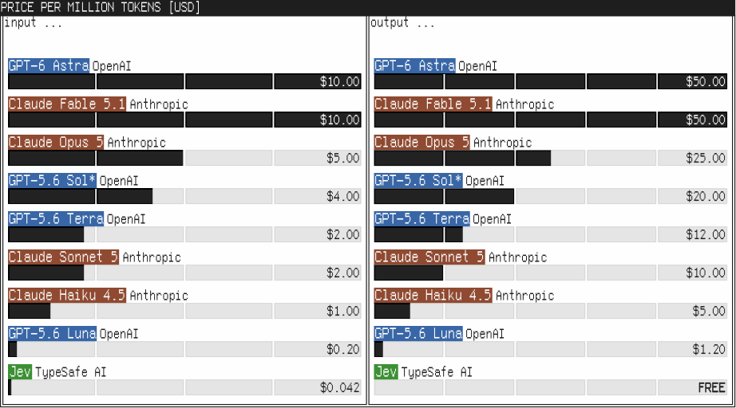
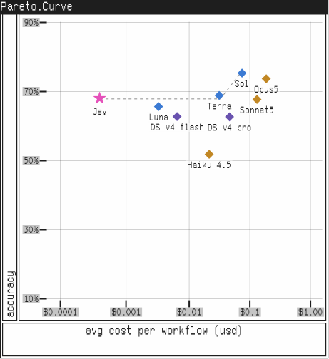

A decision model and a frontier LLM. Same 24 decisions.
Four engines. Four pipelines. Same inputs, same scoring. Jev (TypeSafe) matched the human-decided right call on 19 of 24. The frontier LLM 15. A local model 15. And a scripted rule-mock scores 24 — by construction: it replays the expected answers, so it is the scoring anchor, not a competitor. Everything below is expandable, every number traces to a committed run file.
decision model with typed outputs and calibrated confidence
5-sample self-consistency, cloud, with thinking
same prompts, run locally
scoring anchor — replays expected answers
The 12 cases, head-to-head
Two pipelines went head to head: 6 broken CI runs (decide why it failed, then route) and 6 buy-now-pay-later applications (lend or not). Open any row for the story, each engine's answer, the right call, and why the misses happened — typed data, not hand-waving. needs_human = send to a person
CI TRIAGE · 6 runs · Jev 3/6 · GLM 1/6 · qwen 2/6
CHECKOUT · 6 BNPL apps · Jev 5/6 · GLM 3/6 · qwen 3/6
Latency per decision — log scale
Median (p50) and tail (p95) per ask. One tick = 10×. Jev's 501ms checkout p50 sits at the top of the claimed 70–500ms band; the 824–1030ms p95 tail exceeds it. GLM's triage median is 53× slower than Jev's.
The other two flows
A second wave added 6 bounced installment payments (what now? the WHEN comes from data, not the model) and 6 dependency-upgrade PRs (merge or not?). Here the engines agreed a lot: Jev 11/12, GLM 11/12, qwen 10/12. The shared miss: a borderline security PR that both read as "sloppy" and rejected directly — instead of escalating to a second reviewer.
PAYMENT RETRIES · 6 bounced payments · Jev 6/6 · GLM 6/6 · qwen 5/6
PR REVIEW · 6 upgrade PRs · Jev 5/6 · GLM 5/6 · qwen 5/6
The evidence test: better information, not a better model
Were the misses missing information? This test takes 5 misses, writes targeted evidence into each case, and registers the predictions before running. The first wave measured 0/5 flips — INVALID: the harness silently dropped the new evidence before the model saw it (proved by token count 700→1087 and a live debug run). After the fix: 3/5 flipped to the right call, 2 held. Open a card for predicted vs measured.
The published claims, measured
TypeSafe's docs make five testable claims about Jev. Each one was pointed at a real probe battery — same batteries for the LLM stand-ins. Expand each row for the numbers and a plain-language reading. No rounding up.
Published pricing & positioning charts
From typesafe.ai. The pricing chart matches the rates used in the cost math (claim 03 below) — $0.042 per million input tokens, output free.

